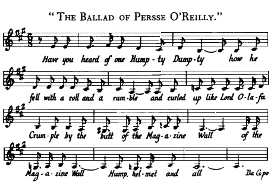

snowycrested curl amoist the leader’s wild and moulting hair,
‘Ductor’ Hitchcock hoisted his fezzy fuzz at bludgeon’s height
signum to his companions of the chalice for the Loud Fellow,
boys’ and silentium in curia! (our maypole once more where he rose
of old) and the canto was chantied there chorussed and christened
where by the old tollgate, Saint Annona’s Street and Church.
And around the lawn the rann it rann and this is the rann that
Hosty made. Spoken. Boyles and Cahills, Skerretts and Pritchards,
viersified and piersified may the treeth we tale of live in stoney.
Here line the refrains of. Some vote him Vike, some mote him
Mike, some dub him Llyn and Phin while others hail him Lug
Bug Dan Lop, Lex, Lax, Gunne or Guinn. Some apt him Arth,
some bapt him Barth, Coll, Noll, Soll, Will, Weel, Wall but I
parse him Persse O’Reilly else he’s called no name at all. To-
gether. Arrah, leave it to Hosty, frosty Hosty, leave it to Hosty
for he’s the mann to rhyme the rann, the rann, the rann, the king
of all ranns. Have you here? (Some ha) Have we where? (Some
hant) Have you hered? (Others do) Have we whered? (Others dont)
It’s cumming, it’s brumming! The clip, the clop! (All cla) Glass
crash. The (klikkaklakkaklaskaklopatzklatschabattacreppycrotty-
graddaghsemmihsammihnouithappluddyappladdypkonpkot!).
{Ardite, arditi!
Music cue.
“The Ballad of Persse O’Reilly”

44